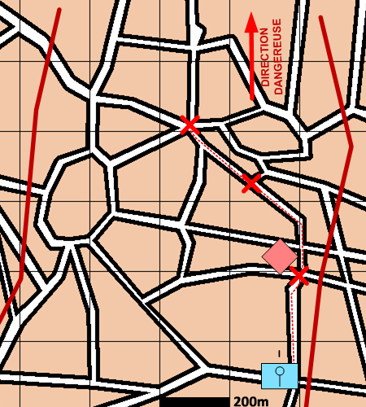

NIVEAU : Automate
ARME : CIRCULATION
MISSION : Reconnaitre
NIVEAU : Automate
ARME : CIRCULATION
MISSION : Reconnaitre
Schéma de modélisationReconnaître |
Paramètres obligatoiresFuseauZone de responsabilité. Direction Dangereuse Orientation privilégiée des capteurs. Objectifs Points Points à reconnaître. Zones Zones à reconnaître. Blocs Urbains Blocs Urbains à reconnaître. |
|
Paramètres optionnelsLigne(s) de coordination [LC]Ligne de début et fin de mission [LDM/LFM] |
||
 |
Fiches missions |  |